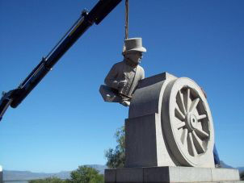
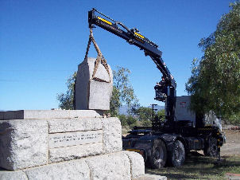
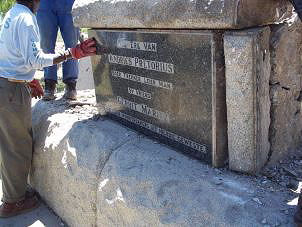
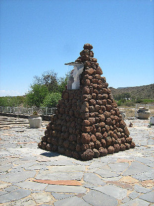
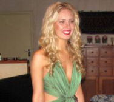
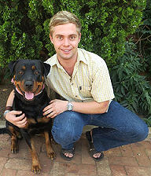
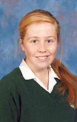
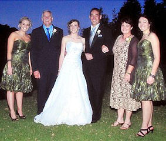

Vir die eerste keer in Suid-Afrika se geskiedenis spog 'n perd nou ook met sy eie roos. Dit is ook g'n gewone perd nie, maar 'n percheron-kampioenhings al die pad van Frankryk. Sympa de Bellevue, of kortweg sommer Sympa, is in 2009 deur b9.c1.d2.e4.f6.g1.h1. Johannes Jacobus (Johan) Henning *2-1-1966, eienaar van die Summerwind-percheronstoet in Klipkop, naby Tygerpoort in Pretoria ingevoer.
Die rooskweker Ludwig Taschner van Ludwig's Roses noord van Pretoria, het onlangs besluit om 'n groot, helderrooi roos na Sympa te noem. Taschner is die enigste rooskweker in Suid-Afrika wat nuwe rose name kan gee. Volgens Taschner is dit die eerste keer in Suid-Afrika dat 'n roos na 'n perd genoem word en maar die tweede keer ter wêreld.
Johan Henning, ook 'n blomkweker, het self die roos gekies wat sy perd se naam gestand sal doen. Volgens Johan was Sympa die eerste percheronhings wat in 41 jaar van Frankryk na Suid-Afrika ingevoer is.
Sympa (6) staan 17,2 hande hoog en weeg meer as 'n ton. Hy is in 2011 as Suid-Afrika se perd van die jaar aangewys. Hy het teen 17 raskampioenperde deelgeneem en was die eerste percheron wat die titel verwerf het.
Die Summerwind-stoet spog nou met 25 percherons, waaronder vier ingevoerde hingste. Dié tamaai perderas, wat kenmerkend wit, skimmel-agtig of grys is, is vroeër gebruik om landerye te ploeg. Hulle is ook in die Eerste Wêreldoorlog ingespan om kanonne te trek. Op eie bodem is die percherons tot sowat 'n half eeu gelede in groot getalle voor ploeë in die Bolandse wingerde gesien. Deesdae word hulle in perdekar-kompetisies, eko-toerisme en as plesierperde gebruik.
Die Sympa de Bellevue-roos is reeds te koop.

Sterftes
Ons het met leedwese van die volgende sterftes verneem:
b1.c3.d10.e10.f1.g2. Christiaan Rudolf Henning *31-12-1931 is op 21 Augustus 2012 oorlede. Chris en sy vrou, Martha is op 28 April 2012 op hulle plaas naby Tsumeb in Namibia deur vier of vyf rowers aangeval. Tydens hierdie brutale aanval het hy bloeding op die brein en 'n beroerte opgedoen. Hy was vir ongeveer vier maande in 'n koma of semi-koma en is in die hospitale te Tsumeb en Windhoek verpleeg, maar is uiteindelik op 21 Augustus 2012 oorlede.

Moord op 'n Henning egpaar
In die Haantjie no 95 van Augustus 2008 het ons berig oor die moord op b7.c8.d5.e10.f2. Olivier Johannes Henning *8-3-1940 en sy vrou Anna Susanna Magdalena (Suzette) (gebore Prinsloo) van Kempton Park. Hulle is, saam met een van hulle werkers, by die dagsorgsentrum, waarvan hulle die eienaars was, met 'n piksteel doodgeslaan. 'n Verdagte is wel in hegtenis geneem en aangehou. Gedurende November 2012 - dus meer as vier jaar later - het regter Nathan Jacobs, 'n regter van die Hooggeregshof hierdie beskuldigde vrygespreek van die moord, omdat die polisie die saak so swak ondersoek het.

Geldsake
Op finansiële gebied gaan 2013 sekerlik ook sy tol van die familiebond eis. Afgesien van die normale bedryfsuitgawes, soos papier, koeverte, drukkersink, posseëls, internettoegang, rekenaaruitgawes, ensovoorts, moet ons ook probeer om fondse opsy te sit vir die groot familiefees wat ons vir 2014 beplan.
Ons doen dus maar weer 'n beroep op al ons lede om so gou as moontlik u finansiële bydraes vir 2013 vir ons aan te stuur. U besluit self hoeveel u kan en wil bydra. U kan u bydrae direk in die familiebond se bankrekening deponeer (ABSA Bank Villiersdorp, tak no 334-612; rekeningnaam - Henning Familiebond; rekeningnommer 2890 610 423). Verstrek asseblief u naam en lidnommer (soos verstrek op die koevert) as verwysing. Andersins kan u u bydrae stuur aan Posbus 121, Villiersdorp, 6848.
Soos gewoonlik meld ons graag die name van diegene wat oor die voorafgaande drie maande bydraes van R300.00 en meer aangestuur het:
* Lizelle Henning van Pretoria, 'n lewenslange lid - R700.00
* Dr Nico Henning van Lyttelton, Centurion, 'n lewenslange lid - R500.00
* Dr MEJ (Tjol) Henning van Lyttelton, Centurion - R500.00

Militêre Toekennings
Alle lande reg deur die wêreld het stelsels in plek om hulle onderdane te beloon vir buitengewone dade. Dit word gewoonlik gedoen deur bepaalde Ordes, Dekorasies of Medaljes aan begunstigdes toe te ken. Meeste lande verdeel dan ook hulle eretoekennings in 'n militêre- en 'n burgerlike afdeling.
In die militêre afdeling word eretoekenning gewoonlik in vier kategorië ingedeel, nl
1. Ordes, dekorasies en medaljes vir buitengewone voortreflike diens;
2. Dekorasies en medaljes vir dapperheid;
3. Medaljes vir lang diens, en
4. Medaljes vir oorloë, veldtogte en veldslae
Suid-Afrika het vir baie jare die Britse stelsel nagevolg en is eretoekennings vir buitengewone voortreflike diens slegs aan offisiere toegeken. Waar onder-offisiere en manskappe ook voortreflike diens gelewer het, is hulle name slegs eervol vermeld in verslae aan die hoofkwartier ("mentioned in despatches"). Dit het so 'n persoon geregtig gemaak om 'n klein brons eikeblaar embleem as deel van sy medaljelinte op sy linkerbors te dra.
Nuwe navorsing wat ons onlangs gedoen het, het na vore gebring die name van twee Henning onder-offisiere wat gedurende die Tweede Wêreldoorlog 1939 - 1945 in die Unie Verdedigingsmag gedien het en wie se name eervol vermeld in verslae aan die Hoofkwartier, nl. b1.c6.d6.e4.f1. Sersant Jan Hendrik Rudolph Henning *14-5-1903 en a3.b10.c2.d1.e3. Korporaal Johannes Jacobus Henning *13-12-1918. Ons was nie bewus van hierdie toekennings aan hierdie twee manne nie.
Jan Hendrik Rudolph Henning dien in die Provooskompanie (militêre polisie) en later in die Betaalkorps. Afgesien van hierdie voortreflike diens toekenning, is die volgende medaljes ook aan hom toegeken: 1939 - 45 Ster, Afrika Ster, Oorlogsmedalje (1939/45), Afrika Diensmedalje.
Johannes Jacobus Henning, wat 'n lid van die derde Henning stam in Suid-Afrika was ('n nasaat van Johan Wilhelm Henning, Hoofstuk 12 van die Henning Familiekroniek), dien in die Seinkorps van die Unie Verdedigingsmag. Afgesien van die voortreflike diens toekenning, is die volgende medaljes ook aan hom toegeken: 1939/45 Ster, Afrika Ster met 8ste gespe, Italië Ster, Oorlogsmedalje (1939/45), Afrika Diensmedalje.
Ongelukkig het ons geen foto's van hierdie twee manne nie.
Na Republiekwording in 1961 het die Suid-Afrikaanse Weermag die eervolle vermelding toekenning (eiekeblaar) aan Onder-offisiere vervang met 'n medalje genaamd die "Hoof van die SA Weermag Aanprysingsmedalje. Dit kon aan offisiere en onder-offisiere toegeken word. Hierdie medalje se naam is nog later, gedurende die vroeë 1990's verander na die "Militêre Meriete Medalje". Ontvangers van hierdie medalje sou voortaan geregtig wees om die na-naamse letters MMM agter hulle naam te skryf. Verskeie Hennings wat sedert 1961 in die SA Weermag gedien het, het hierdie medalje verwerf, maar Jan Hendrik Rudolf Henning en Johannes Jacobus Henning sal altyd onthou word as die enigste twee Hennings wat die eikeblaar embleem op hulle linkerbors gedra het.

Andries Pretorius Monument, Graaff-Reinet
In die Haantjie no 111 van Augustus 2012 het ons berig oor die fondsinsamelings-veldtog wat die Rapportryers en Afrikanerbondtak van Graaff-Reinet mee besig is, om die Andries Pretorius monument te verskuif. Die monument word by die huidige standplaas gevandaliseer, weens 'n plakkerkamp wat daar naby ontstaan het. Die bestuur van ons Familiebond het R1000.00 bygedra tot hierdie fondsinsamelingsveldtog omdat die Henning familie se wortels so diep in Graaff-Reinet grond lê. Die Rapportryers het ongeveer R14 000.00 van die benodigde R75 000.00 ingesamel.
Gelukkig het die Erfenisstigting (waarvan ons familiebond ook lid is) betrokke geraak en hulle sal die uitstaande fondse insamel en met eie arbeid die verskuiwing behartig.
Soos op die foto's hieronder gesien kan word, is die verskuiwing van die Andries Pretorius monument vanaf die huidige, hoogs bedreigde standplaas net noord van Graaff-Reinet na 'n nuwe, beveiligde posisie in die Camdeboo Nasionale Park, ongeveer 1 km verder noord en steeds sigbaar vanaf die Graaff-Reinet-Middelburg hoofpad, gedurende Oktober/ November 2012 uitgevoer. Die monument is by die nuwe standplaas onthul op 16 Desember 2012. Daar word op gepaste wyse erkenning gegee aan almal wat bygedra het tot hierdie projek.
|  |  |  | ||||||||
|
Drie foto's van die verskuiwing van die Andries Pretorius monument by Graaff-Reinet na 'n nuwe perseel. Omdat die Henning familie se wortels diep lê in die geskiedenis van Graaff-Reinet het die bestuur van die Familiebond besluit om by te dra tot hierdie verskuiwings-operasie. Die Voortrekkerleiers, Andries Pretorius, Andries Hendrik Potgieter, Louis Trighard, Gerrit Maritz het in dieselfde tyd as die eerste drie geslagte Hennings hier gewoon
Bethulie Konsentrasiekamp Gedenkteken

Die herboude klipstapel wat die vroue wat in die Bethulie konsentrasiekamp aangehou is, na die oorlog opgerig het, met 'n replika van die engelbeeld wat gemaak is. Die fondse vir die maak van die matrys is deur die Henning Familiebond geskenk
Dit is algemeen bekend dat die Henning Familiebond in 2010 bygedra het tot die oprigting van die Konsentrasiekamp Gedenkteken by die oorlogsmuseum/Vroue-monument in Bloemfontein. Hierdie gedenkteken is opgerig omdat die regering nie meer sy verpligtinge ten opsigte van die instandhouding van Afrikaner monumente en gedenktekens nakom nie en ter vervanging van die Bethulie Konsentrasiekamp Gedenkteken, wat erg vervalle geraak het. Ons bydra is gebruik om 'n afgietsel te maak van die engelbeeld wat by die Bethulie gedenkteken gesteel, maar gelukkig teruggevind is. Die oorspronklike beeld word nou in die museum in Bloemfontein bewaar, terwyl 'n replika by die gedenkteken in Bloemfontein opgerig is. Intussen het die inwoners van Bethulie besluit om self hand aan die ploeg te slaan en hul gedenkteken te herstel en in stand te hou. Ons het onlangs die volgende brief ontvang van Trudie Venter van Bethulie: Dit was vir my 'n verrassing toe ek pas na die herinwyding sien waar ons replikabeeldjie se befondsing vandaan kom. Ek het na iets anders op die internet gesoek en toevallig op die berig in jul nuusbrief afgekom. Baie van die skenkings is dikwels naamloos vir die ontvanger vanuit 'n groter poel, maar nou het ons die geleentheid om persoonlik dankie te sê. Hier in Bethulie het ons 'n groepie mense, Klub 101, wat nou oa verantwoordelikheid aanvaar het vir die verdere instandhouding van ons konsentrasiekampkerkhof. Ons is baie dankbaar teenoor die Erfnisstigting, waarvan ons ook lid is, wat die terrein laat herstel het met die hulp van mnr Barend van Loggerenberg. (Hy het ook die Andries Pretorius gedenkteken verskuif waarby julle ook betrokke is!). Die terrein was erg verwaarloos, veral wat die strukture betref en die Erfenisstigting het ongeveer R60, 000 spandeer en mnr van Loggerenberg het ongeveer 10 weke hier gewerk. Dit lyk nou pragtig, maar vir my is die hoogtepunt dat die engeltjie weer op sy plek staan! Sy is ook beveilig met 'n "perspex" kassie. Ek heg 'n foto hierby aan. Ek is seker julle weet dat sy op die herboude moederstapel staan; die klipstapel wat die oorblywende vroue net na die vredesluiting in die kamp opgerig het onder leiding van ds Becker. Ek merk dat daar 64 Hennings in Bethulie se kamp aangehou is waarvan 15 gesterf het - dus kan ek die rede vir die spesifieke skenking van die Henning Familiebond begryp. Ek wil namens Klub 101 en die gemeenskap van Bethulie julle bedank vir die bydrae. Die afgelope paar jaar het die verwaarlosing van ons monumente vir my 'n weerspiëling geword van 'n Afrikanervolk wat boedel oorgee; maar ek merk in die laaste tyd vandat ons monumente ten minste probeer skoon hou en bietjie kon opknap of daar weer 'n trots begin ontwikkel en mense meer betrokke raak. Dit is die gevolge van julle tipe bydraes. Ek het onlangs 'n boek gepubliseer "Bethulie en die Anglo-Boereoorlog" daarin het ek twee keer na Hennings verwys: van Bethulie se oudste krygsgevangenes, waarvan 'n paar oor die 70 was was daar oa 'n Joseph Johannes Henning. Die ander verwysing was na Albertus Henning wat na die oorlog Argentinië toe is. Nogmaals baie dankie en kom besoek gerus julle engeltjie! Vriendelike groete, Trudie Venter, Posbus 138, Bethulie, 9992
2012 MatrikulanteAan die einde van 2012 het slegs 35 Henning jong mense die matriek eindeksamen suksesvol afgelê. Dit is die kleinste getal sedert ons in 1985 begin het om hierdie gegewens aan te teken. Teen die middel van die 1980's het ongeveer 60 Henninkies jaarliks matriek geskryf. Vanaf die 1990's het hierdie getal afgeneem na ongeveer 45 per jaar. In 2010 het slegs 37 die eindeksamen afgelê, met 43 in 2011. Die drie grootste presteerders hierdie jaar is: 1. Mare-Lee Magdalena Henning wat die eindeksamen in die Noord-Wes Provinsie afgelê het. Ongelukkig het ons haar nie op rekord nie en weet nie eens watter skool sy bygewoon het nie; Mare-Lee Henning het agt onderskeidings behaal in Afrikaans (Huistaal), Engels (eerste addisionele taal), Wiskunde, Rekeningkunde, Verbruikerstudies, Fisiese Wetenskappe, Lewenswetenskappe, Lewensoriëntering. Ongelukkig weet ons nie wat sy met haar loopbaan beplan nie.

Mieke Henning *1-10-1994 wat matriek met vyf onderskeidings geslaag het
b6.c1.d3.e5.f3.g10.h2.i2. Mieke Henning *1-10-1994 van Bloemhof Meisie Hoërskool, Stellenbosch het vyf onderskeidings behaal in Afrikaans (Huistaal), Wiskunde, Rekeningkunde, Dramatiese Kunste en Lewensoriëntering. Sy het 'n A-gemiddeld behaal. Sy beplan om in 2013 Bedryfsingenieurswese aan die Universiteit van Stellenbosch te gaan studeer.

Jopie Henning en sy hond Caramba. Mieke en Jopie se oupas was broers
b6.c1.d3.e5.f3.g3.h3.i2. Josef Jooste Henning *15-1-1993 (Jopie) Die veggees wat hy by sy Boerevoorouers geërf het, het hom in staat gestel om vier onderskeidings en 'n A-gemiddeld met 82% te behaal ondanks 'n beroerte in sy matriekjaar. So glo Jopie wat as Potchefstroom Gimnasium se "Guts-leerling" vir 2012 aangewys is. Hy het onderskeidings behaal in Afrikaans (huistaal), Visuele Kunste, Lewensoriëntering en Wiskundige Geletterdheid. Jopie skryf vanjaar vir sy LLB-graad by die Noordwes Universiteit se Potchefstroom-kampus in. Sy pa, Lourens, 'n oud-skoolhoof, vertel skertsend sy Jopie is 'n regte ongeluksvoël: in 2007 het hy 'n mislukte kaping oorleef toe die gesin nog in KwaZulu-Natal gewoon het en in Maart 2008 is dié belowende 400m-atleet se atletiekloopbaan kortgeknip toe sy regterbeen ernstig in 'n bootongeluk beseer is. In September 2009 het Jopie ontsteking in sy hartsak opgedoen. Aan die begin van sy matriekjaar in 2011 by die Hoërskool Pionier in Vryheid (KZN), het dié siekte hom weer platgetrek. 'n Deel van sy hartsak is in 'n operasie in 'n Pretoriase hospitaal verwyder. Dokters hier het ook vasgestel Jopie het 'n geenafwyking wat vliese om sy organe en kraakbeen aantas. Jopie is behandel met chemoterapie, hartpille en anti-inflammatoriese middels. Hy kon sy matriekjaar weens sy gesondheidsprobleme nie voltooi nie. Die gesin het intussen na Potchefstroom verhuis. Hier het hy begin fietsry en aan strawwe wedrenne deelgeneem.In Desember 2011 het hy geval en bloeding op die brein gehad. Toe hy in Maart 2012 'n beroerte kry, is besef die anti-inflammatoriese middels het sy bloed verdun en veroorsaak dat 'n skeurtjie in 'n aar nooit toegegroei het ná die fietsongeluk nie. Die drukking het opgebou en uiteindelik 'n beroerte veroorsaak. Hy moes 'n noodoperasie ondergaan om die drukking te verlig en kon weer 'n tydlank nie skoolgaan nie. Vir die buitengewone prestasie wat Jopie Henning gelewer het, het die onderwys owerhede van die Noord-Wes Provinsie 'n spesiale dapperheidstoekenning aan hom gemaak.
Lenélle Henning Presteer

b7.c8.d8.e3.f4.g2.h1. Lenélle Henning *23-1-1998, wat nou reeds as skrywer ontpop
Die Bloemfonteinse Skrywersvereniging hou elke jaar 'n skryfwedstryd vir skoolkinders van oor die hele land. In die 2012 wedstryd het b7.c8.d8.e3.f4.g2.h1. Lenélle Henning *23-1-1998, 'n Graad 8 (ou St 6) leerling van die Hoërskool DF Malan van Bellville die tweede plek in die Junior Afdeling verower. Sy is die dogter van Leonard - en Chantélle Henning van Van Riebeeckshof, Bellville (en natuurlik die kleindogter van Bondsekretaris, Olivier en Charlotte Henning. Lenélle se kortverhaal, met titel "Geheime Kamer" is opgeneem in die boek met titel "Inkvars 2012" waarin al die wen kortverhale opgeneem is.
Henning Troue op Tzaneen

Troufoto van b7.c8.d8.e5.f3.g1. Ineke Henning *22-10-1984 en Jacobus De Wet Richter *10-6-1976. V.l.n.r: Ineke se jongste suster, Elriké *2-2-1991, pa Pieter Naude Henning, Ineke en Kobus, ma Ingrid en suster, Amri *9-5-1988
Op 6 Oktober 2012 het daar 'n feestelike huwelik plaasgevind waarby een van ons pragtige Henning jong meisies betrokke was. Ineke Henning *22-10-1984 oudste dogter van b7.c8.d8.e5.f3. Pieter Naude Henning en sy vrou Ingrid (gebore Kapp) van Tzaneen is in die huwelik verbind met Jacobus De Wet Richter *10-6-1976. Kobus is die seun van Jacobus Marthinus Richter en sy vrou Wilhelmina Susanna Nortier. Ons wil graag vir Cobus en Ineke 'n lang en gelukkige huwelik toewens.
Groot Trek 175 jaar HerdenkingVerskeie kultuurorganisasies is aan die spits van die GROOT TREK 175 feesvieringe wat hierdie jaar (2013) landwyd aangebied word. As gevolg van verskeie Henning families wat ook deel was van hierdie epiese gebeurtenis in ons land se geskiedenis, behoort alle Henning's sekerlik ook aan vanjaar se feesvieringe deel te neem. b5.c2. Pieter Hendrik Henning *8-9-1804 was immers die eerste Henning wat kort na sy tweede huwelik in 1836 sy wa gepak en Andries Hendrik Potgieter op sy tog na Potchefstroom gevolg het. Sy eerste vrou is die jaar tevore (1835) deur Xhosa impi's tydens die sesde Xhosa-oorlog op hul plaas De Put, in die wyk Brakrivier, distrik Somerset (tussen die hedendaagse dorpe Hofmeyr en Middelburg) doodgemaak. Pieter Hendrik Henning het op daardie stadium vyf klein kindertjies tussen 11 jaar en 'n paar maande gehad. Verskeie ander Hennings, soos b9. Jan Hendrik Henning *2-6-1770 en sy seun Jan Hendrik *8-1-1816 het hierna ook na die binneland van Suider Afrika uitgewyk. Die Groot Trek van die 19de eeu vanuit die Kaapkolonie die binneland in, het 'n blywende merk aan die Suidpunt van Afrika kom maak. Dit is hierdie pioniers wat die land kom mak maak het: wat die plase, dorpe en stede aangelê het; kerke, hospitale en skole gebou het - wat gelei het tot 'n moderne staat met nywerhede, paaie, damme en brûe asook krag en kommunikasienetwerke. Dit het ook gelei tot die ontdekking van goud, diamante en steenkool. Daar is verskeie redes waarom sowat 14 000 mense die Kaap verlaat het, maar daar word gereken die belangrikste redes was die versuim van die owerhede om behoorlike hulp te verleen aan die grensboere teen die Xhosa rampokkers se moord- en rooftogte op die plase, en die verengelsing van die kerke, skole en howe. Daarby was die altyd inherente begeerte na 'n eie vrye land ... weg van Britse Imperialisme, 'n groot dryfveer. Die Genootskap vir die Handhawing van Afrikaans (GHA) het teen die einde van 2012 'n Afrikaanse Dagboek vir 2013 met Die Groot Trek as tema saamgestel. Hulle wou egter die publiek die geleentheid gee om teen 'n geringe bedrag hulle lewenswyshede of boodskappe van hoop in dié besondere Afrikaanse Dagboek te plaas. Hierdie boodskappe sal op 24 September 2013 tydens 'n seremonie in 'n spesiale houer by die Voortrekkermonument geplaas en verseël word. Dan, op 16 Desember 2038 tydens die 200-jarige herdenking van die Groot Trek sal dié boodskappe van hoop aan ons nageslag ontbloot word. Bondsekretaris, Olivier Henning het op eie koste, maar namens die Henning Familiebond ook 'n boodskap voorberei wat op 3 Desember 2013 in die Dagboek opgeneem is. Sy boodskap lui as volg: "Genl Christiaan De Wet se opmerking tydens Pres MT Steyn se begrafnis op 3 Desember 1916 is vandag weer aktueel: 'Ons staan op die punt om òf 'n groot volk te word, óf om op te hou om as 'n volk te bestaan. Laat ons dus werk terwyl dit dag is. Laat ons ons volk opbou.' " Hierdie dagboek sal hopelik vanaf ongeveer 20 Januarie 2013 by die GHA-kantoor in Paul Krugerstraat, Pretoria of by Radio Pretoria se boekwinkel in Montana beskikbaar wees.
Oorlogsmuseum van die BoererepubliekeTeen die einde van die negentiende eeu/begin twintigste eeu was daar nie 'n enkele Henning in Suid-Afrika wat nie deur die Anglo-Boere-oorlog van 1899 tot 1902 geraak is nie. Die geskiedenis van die Henning familie is dus onlosmaaklik verweef met alles wat by die Oorlogsmuseum van die Boererepublieke en die Vrouemonument in Bloemfontein ten toon gestel word. Die laaste dekade ervaar die museum 'n groot herondekking deur Afrikaanssprekendes van spesifiek dié deel van die geskiedenis - vandaar verskeie nuwe inisiatiewe en projekte wat onlangs deur die museum aangepak is. Hier dink ons veral aan die Konsentrasiekamp Gedenkteken wat gedurende 2010 opgerig is, asook die Gedenkmuur ter ere van gesneuwelde burgers wat in 2011 tot stand gekom het. Die Henning Familiebond het aktief aan beide hierdie projekte deelgeneem. Verblydend is die feit dat daar groot belangstelling is deur veral jong mense. Ten einde die Anglo-Boereoorlog nog meer te bemark, bedink die museum unieke maniere om besoekers te lok. Een hiervan is die museum se kuns-inisiatief vir 2013 wat saamval met die Nasionale Vrouemonument se honderdjarige herdenking. Die museum beskik oor 'n baie groot en waardevolle kunsversameling insake die Anglo-Boereoorlog. Dié versameling wat bestaan uit werke van pionierskunstenaars soos Erich Mayer, Frans Oerder, Anton van Wouw, Pieter Hugo Naude, Johannes Meintjes, Jo Roos, Danie de Jager en ander word beskou as een van Suid-Afrika se groot erfenisbates. Die versameling is in die jare 1970 afgesluit aangesien min kunstenaars nog dié Anglo-Boereoorlog as tema gebruik het. Die Oorlogsmuseum het veertig (in die hoop om 20 werke te kry) van die beste Suid-Afrikaanse skilders genader om 'n kunswerk met die tema "Lyding van vroue en kinders tydens die Anglo-Boereoorlog" saam te stel en aan die museum te skenk. Die doel hiermee is nie net om die museum se kunsversameling in nuwe werke en waarde uit te brei nie, maar ook om kunstenaars aan te moedig om op die manier hul veelsydigheid te toon met die Anglo-Boereoorlog as tema. Die reaksie was bo verwagtig goed en 68 skilders het met groot entoesiasme die uitdaging aanvaar. Werke in 'n realistiese of semi-realistiese styl in olie, waterverf, houtskool, pastelle en ander medium is as vereiste gestel. Beeldhouers het ook die museum genader en aangebied om werke te skep rondom dié tema. Die projek is uitgebrei na keramiekkunstenaars (skakel in by die museum se groot keramiek teëltablo's) wat ook 'n bydrae wil lewer asook weef- en kantwerke om in te skakel by Emily Hobhouse se Kant- en Weefskole. Enkele kunsmuseums het aangedui dat hulle die versameling wil leen vir 'n vasgestelde tyd. Die bo verwagte goeie reaksie het tot gevolg dat 'n opening in 'n kunsgallery nou beplan word weens die omvang van die projek. Daar is reeds met die Stegman kunsgallery onderhandel om in Junie 2013, tydens die Volksblad se "Vryfees" dit by die geleentheid te open. Die werke sal daarna in die Oorlogsmuseum uitgestal word. Die museum het onderneem om elke skildery te raam en te laat vervoer, so ook die keramiek, beeld- en tekstiele. Aangesien van die werke groot is, begroot die museum 'n bedrag van R 80 000.00 vir raamwerk en vervoerkostes van die werke (skilderye, beedhouwerke, keramiekware en tekstiele) deur bykans 100 kunstenaars. Die museum klop aan by die deure van verskeie instansies om finansieël te help met die baie besondere projek. Enkele instellings en persone het reeds geld bewillig vir die projek, maar die beraamde R 80 000.00 is nog nie bereik nie. Die waarde van so 'n belegging is dat dit iets permanent is wat vir dekades nog deur besoekers waardeer kan word danksy die finansiële steun deur instansies vanoor die land. Die Vrouemon-ument is ook met klein bydraes opgerig in 1913. Die bestuur van die Henning Familiebond het dus besluit om ook aan hierdie projek deel te neem en 'n bedrag van R2 000.00 by te dra. Erkenning vir ons bydrae sal op 'n gepaste wyse gegee word. Drie van die skilderye wat deel van die Oorlogsmuseum kunsuitstalling sal wees en wat geraam moet word. Die Henning Familiebond het bygedra om dit moontlik te maak. Lienkie Lombaard is die kunstenaar van die boonste skildery, Johan Marais van die tweede een en die onderste skildery van Nonnie de la Rey is gemaak deur Retha Buitendach
| ||||||||||